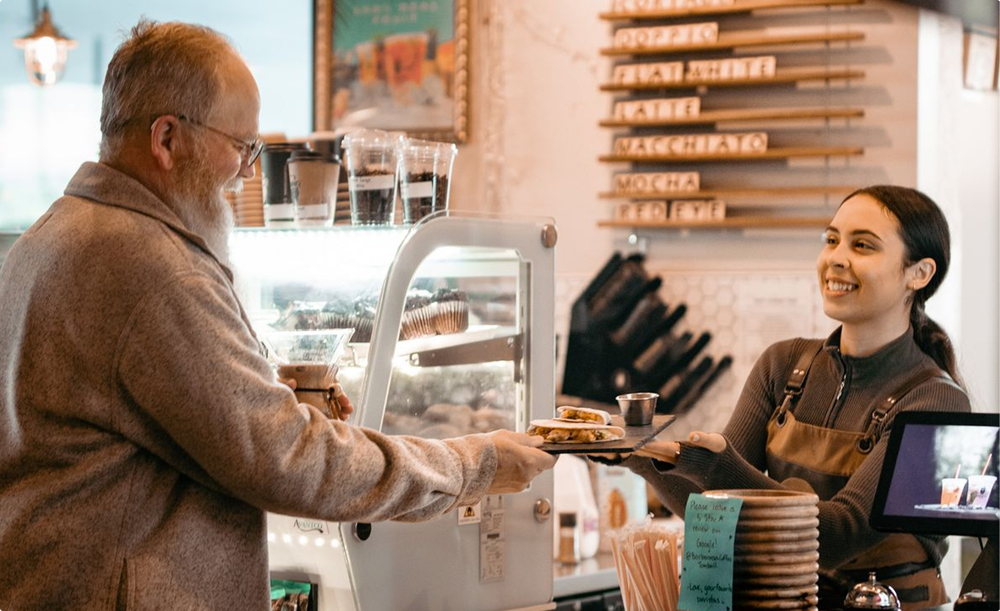
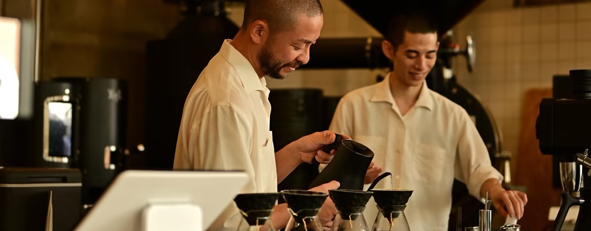

私たちについては
家族が自然体で過ごせる場所をつくりたい。そんな小さな想いから、このカフェは生まれました。
きっかけは、何気ない日常の中にありました。忙しさに追われる毎日の中で、気づけば家族でゆっくり 同じ時間を過ごすことが、少しずつ少なくなっている。そんなふとした瞬間に、「もっと一緒に過ごせる場所があったらいいのに」と思ったのです。 カフェは、ただコーヒーを楽しむだけの場所ではなく、人と人が自然につながる場所であってほしい。そう考えながら、この空間を少しずつかたちにしていきました。 ここでは、大人はほっと一息つき、子どもは子どもらしくのびのびと過ごせる。泣いたり笑ったりする日常のすべてを、そのまま受けとめられる場所です。そして、世代をこえて同じテーブルを囲める時間を、何よりも大切にしています。 特別な日でなくてもいい。何気ない一日が、ふと振り返ったときに思い出になる。このカフェで過ごした時間が、家族にとってやさしく残り続けるものであれば嬉しいです。そしていつか、「またここに来よう」と思い出していただける場所でありたい。このカフェが、あなたの家族の物語の中にそっと寄り添えますように。

オーナーの声
「家族が自然体で過ごせる場所をつくりたい」そんな想いから、このカフェを始めました。 忙しい日々の中でも、少し立ち止まって、大切な人と同じ時間を過ごせる場所でありたい。 この場所が、誰かの大切な思い出の一部になれたら嬉しいです。
スタッフの声
このカフェで働いていると、 毎日いろいろな家族の時間に出会います。お子さまの笑顔や、ご家族でゆっくり過ごす姿を見るたびに、この場所のあたたかさを感じます。 ここが、誰にとっても安心できる場所であり続けるよう、一杯一杯、心を込めてお届けしています。
お客様の声
「子どもと一緒でも安心して過ごせるのが嬉しいです。」「ゆっくりできて、また来たいと思える場所です。」 そんな言葉をいただくたびに、このカフェの意味を改めて感じています。 これからも、皆さまにとって心地よい場所であり 続けたいと思います。